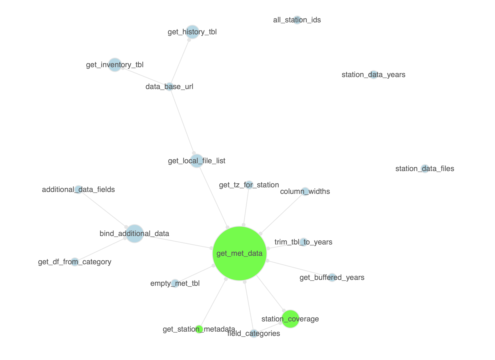
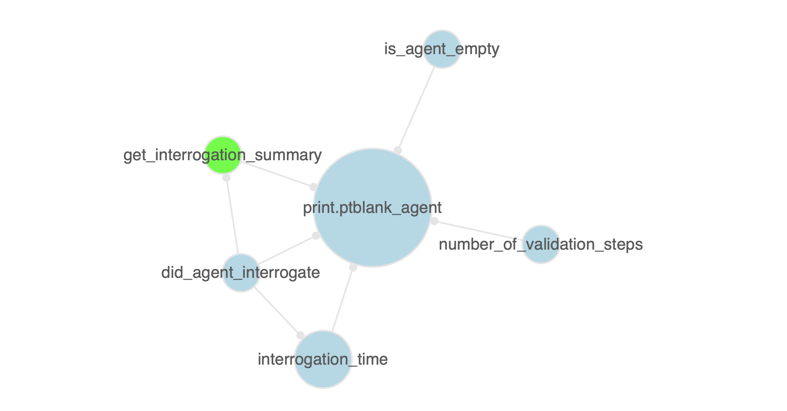

The pkgattrs package is useful for getting information on the contents of any R package. One of the things that can be done is generating a summary of functions available in one or more packages. We can conveniently do this using the pkgattrs() function. Here is an example where we can create an informative table of the functions in the pkgattrs and blastula packages (hosted on GitHub).
fn_info <- pkgattrs( from_github("rich-iannone/pkgattrs"), from_github("rich-iannone/blastula") )
The resulting tibble contains the following information in each record:
- the package name (
pkg_name) - the package source location (
pkg_src) - the function name (
fn_name) - whether the function is exported or not (
exported) - the file that contains the function (
r_file) - the relative path from pkg root to
r_file(r_file_path) - the line number in
r_filewhere the function starts (ln_start) and ends (ln_end) - the number of lines used for the function (
fn_lines) - the number of lines in the function used for code (
code), for comments (comment), and for roxygen statements (roxygen), and, thefn_lineslines that are blank (blank): the sum of all these is given intotal_lines - optionally, the cyclomatic complexity of the function (
cyclocomp) - the name of the package repository, if it was obtained from one (
pkg_repo) - the name of the package path, if it was a locally-available package (
pkg_path) - the number of package functions that are called in
fn_name(n_pkg_fns_called) - a list column with the names of the package functions called in
fn_name(pkg_fns_called)
fn_info #> # A tibble: 127 x 18 #> pkg_name pkg_src fn_name exported r_file r_file_path ln_start ln_end #> <chr> <chr> <chr> <lgl> <chr> <chr> <int> <int> #> 1 pkgattrs GitHub are_gi… FALSE utils… ./R/utils.R 4 12 #> 2 pkgattrs GitHub are_lo… FALSE utils… ./R/utils.R 17 24 #> 3 pkgattrs GitHub from_g… TRUE from_… ./R/from_g… 8 16 #> 4 pkgattrs GitHub functi… TRUE funct… ./R/functi… 11 21 #> 5 pkgattrs GitHub functi… TRUE funct… ./R/functi… 35 54 #> 6 pkgattrs GitHub get_fc… FALSE get_f… ./R/get_fc… 13 139 #> 7 pkgattrs GitHub pkgatt… TRUE pkgat… ./R/pkgatt… 13 363 #> 8 pkgattrs GitHub produc… FALSE funct… ./R/functi… 57 103 #> 9 pkgattrs GitHub write_… TRUE write… ./R/write_… 10 101 #> 10 blastula GitHub `%||%` FALSE utils… ./R/utils.R 41 43 #> # … with 117 more rows, and 10 more variables: fn_lines <int>, code <dbl>, #> # comment <dbl>, blank <dbl>, roxygen <dbl>, total_lines <dbl>, #> # pkg_repo <chr>, pkg_path <chr>, n_pkg_fns_called <int>, #> # pkg_fns_called <list>
The package also supplies functions for visualizing the relationships between a package’s functions as a network graph. For example, we could obtain a function information tibble for the stationary package, transform that to a graph, and then examine this network with the function_graph_all() function.
pkgattrs(from_github("rich-iannone/stationary")) %>% function_graph_all()

In this graph, the green nodes show the functions that are exported, and, the relative sizing of nodes is scaled the number of package functions called by each. Each edge represents the relationship called_in.
We can also focus on a subgraph with a single function. The function function_graph_single() can be used with the function graph object, taking a function name to show all the package functions that the function calls. In the following example, we can examine which functions are called by the print.ptblank_agent() method.
pkgattrs(from_github("rich-iannone/pointblank")) %>% function_graph_single(target_fn = "print.ptblank_agent")

Finally, the package has a means to write out a given package’s API with the write_pkg_api() function. For the pkgattrs package (this package), we can generate a file that lists the exported functions along with each of the function arguments and default values.
write_pkg_api(filename = "pkg_api")
This example generates the following text in the API file:
from_github(repo)
function_graph_all(pkgattrs_tbl, pkg_name = NULL)
function_graph_single(pkgattrs_tbl, target_fn, pkg_name = NULL)
pkg_api(...)
pkgattrs(..., .make_clean = TRUE, .get_cyclocomp = FALSE)
write_pkg_api(..., filename = "pkg_api")Installation
You can install pkgattrs from GitHub with:
devtools::install_github("rich-iannone/pkgattrs")